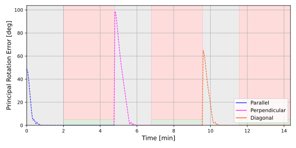
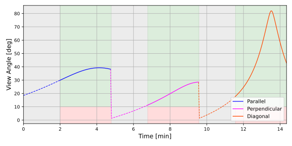
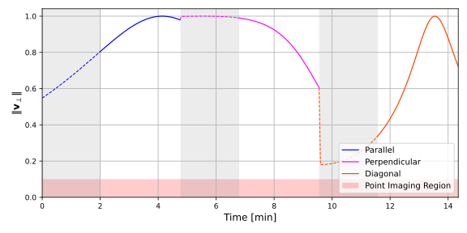

scenarioStripImaging
Overview
This scenario demonstrates sequential strip imaging of three ground strips using the Module: stripLocation and Module: locationPointing modules. A spacecraft in a low-Earth equatorial orbit images three strips one after another, each with a different orientation relative to the orbit track:
Parallel to the orbit track (constant latitude, varying longitude)
Perpendicular to the orbit track (varying latitude, constant longitude)
Diagonal to the orbit track (both latitude and longitude vary)
The script is found in the folder basilisk/examples and executed by using:
python3 scenarioStripImaging.py
Each strip is defined by a start and end geodetic coordinate using the Module: stripLocation
module, which propagates a target point along the great-circle arc between the two endpoints
at a configurable acquisition speed. The Module: locationPointing module provides three-degree-of-freedom
attitude guidance: it points the body-fixed boresight axis pHat_B toward the moving target while
aligning the scanning-line axis cHat_B orthogonal to the scanning direction.
Before each imaging phase, a pre-imaging period allows the attitude control system to achieve acceptable attitude accuracy and/or wait for an acceptable viewing angle.
Attitude control is implemented with an MRP steering law (Module: mrpSteering), a rate servo (Module: rateServoFullNonlinear), and three reaction wheels (Module: reactionWheelStateEffector).
Two imaging constraints are tracked throughout the mission:
Minimum elevation angle (10 deg): the view angle between the spacecraft and the target must exceed this threshold.
Maximum principal rotation error (5 deg): the attitude error must remain below this threshold during imaging.
Illustration of Simulation Results
show_plots = True
The first plot shows the principal rotation error over the full mission. Gray-shaded regions indicate pre-imaging periods. During imaging phases, green shading marks times when the error is below the 5 deg threshold and red shading marks times when it is exceeded.

The second plot shows the view angle (elevation) over the full mission. Green shading during imaging phases indicates the elevation exceeds the 10 deg minimum, while red indicates it does not.

The third plot shows the norm of the perpendicular velocity component \(\|\mathbf{v}_{\perp}\|\). When this value is small (hatched red region), the boresight and target velocity are nearly collinear and the Module: locationPointing module falls back to point-only targeting.

- scenarioStripImaging.compute_extended_start(r_start, r_end, preImagingTime, speed=3e-06)[source]
Extend the strip start backwards along the great circle by preImagingTime to get pStartUpdated.
- scenarioStripImaging.compute_scan_line_extremities(r_s, r_e, width=200000.0)[source]
Compute left and right extremity positions of the current scan line.
- scenarioStripImaging.compute_strip_vertices(r_start, r_end, width=10000.0)[source]
Compute 4 corner vertices of a rectangular strip on the surface.
- scenarioStripImaging.compute_v_perp_norm(att_ref, v_LP_N, pHat_B)[source]
Compute ||v_perp|| = ||pHat_B x v_TP_B|| at each time step.
- scenarioStripImaging.get_target_position(t, r_start, r_end, speed=3e-06)[source]
Interpolate a point along the great-circle arc from r_start to r_end.
- scenarioStripImaging.lat_lon_to_surface(lat_deg, lon_deg, radius)[source]
Convert geodetic lat/lon (deg) to a spherical-Earth surface position.
- scenarioStripImaging.plot_principal_rotation_error(time_min, dataSigmaBR, gray_regions_min, imaging_regions_min, seg_indices, gray_indices, strip_colors, strip_labels, maxPrincipalRotationError=5.0)[source]
Plot principal rotation error over the entire sequential mission.
- scenarioStripImaging.plot_v_perp_norm(time_min, v_perp_norms, gray_regions_min, seg_indices, gray_indices, strip_colors, strip_labels, threshold=0.1)[source]
Plot ||v_perp|| over the entire sequential mission.
- scenarioStripImaging.plot_view_angle(time_min, elevation_rad, gray_regions_min, imaging_regions_min, seg_indices, gray_indices, strip_colors, strip_labels, minimumElevation_deg=10.0)[source]
Plot view angle (elevation) over the entire sequential mission.
- scenarioStripImaging.run(show_plots=True)[source]
- Run a single continuous simulation imaging three strips sequentially:
Parallel to orbit track (constant latitude, varying longitude)
Perpendicular to orbit track (varying latitude, constant longitude)
Diagonal to orbit track (both latitude and longitude vary)